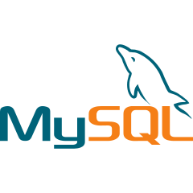
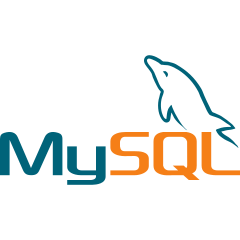

About Me
I'm a dedicated and adaptable individual with a passion for technology, transitioning from a successful career in hospitality management to the dynamic world of software development. Recently, I seized the opportunity for personal growth and redirected my focus towards my passion for technology. Through independent exploration and a recent intensive twelve-week bootcamp, I honed my skills in both front-end and back-end technologies, including HTML5, CSS3, JavaScript, Python, and more. With a keen eye for detail and a strong affinity for collaborative teamwork, I thrive in fast-paced environments and excel at meeting tight deadlines. I'm eager to leverage my diverse background and skill set to make meaningful contributions to innovative projects and continue my journey of professional growth in the ever-evolving landscape of technology."
Skills
My coding skill set starts with the basis of web development - HTML, CSS and JavaScrips, though foundations of versitile language Python in my self-learning.
Completing the Just It Software development bootcamp, took me though amzing experience and upskilling - learning Database MySQL, Python's SQLite, deployment with Flask,
Version Control - GIT and GIT.
Fun Fact - in The Consolidation week 12 of the bootcamp while working with GIT, I managed to delete all my files, I had created through the bootcamp,
making me work aroud the clock to recover projects - I did it! 🔥


 

Projects
JS Calculator
This is the 1st project I did in the bootcamp with a lots of reading, practice, it came to complete, working with basic operations calculator using JavaScrips.For styling I have used Vanilla CSS3.
FilmFlix Project
I enjoyed working on this Python app with SQLite database. I am proud I achieve to embed the Search menu in the main.
FilmFLix Flask
Challenging, complex, I love the wholeness of this project. For styling I used the front-end framework Bootstrap.